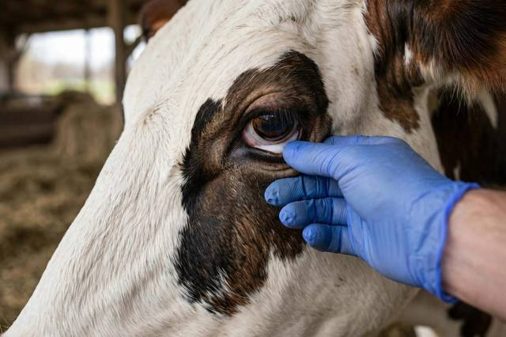
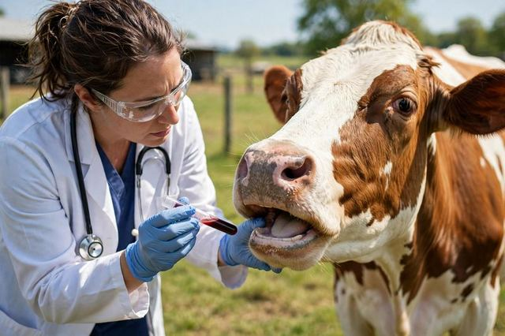
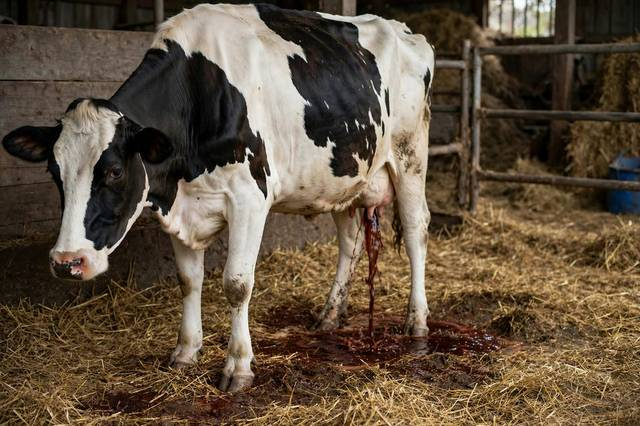

Babesiosis is a tick-borne protozoal disease of cattle that can cause fever, anaemia, jaundice and red or brown urine. Severity varies with parasite species, age, immunity and local conditions.
This guide covers clinical signs, causes, diagnosis, treatment principles and prevention.
Clinical Signs
1
Fever(High body temperature)
2
Weakness(Loss of strength)
3
Pale Mucous Membranes(Anaemia; pale gums and eyelids)
4
Yellow Mucous Membranes(Jaundice; yellowing of gums and eyes)
5
Reduced Milk Yield(Fall in milk production)
6
Enlarged Spleen(Spleen enlargement in some cases)
7
Red-Brown Urine(Dark red-brown urine in severe cases)
FeverWeakness

Pale Mucous MembranesYellow Mucous MembranesReduced Milk Yield

Enlarged Spleen

Red-Brown Urine
Causes and Transmission
Babesia parasites are transmitted mainly by infected ticks. Tick exposure and movement of carrier animals can maintain infection in endemic areas.
Pathogenesis
Babesia parasites are transmitted by ticks and invade red blood cells, where they multiply and rupture the cells. Massive destruction of red blood cells causes acute haemolytic anaemia and releases haemoglobin into the urine, producing red urine.
The loss of red cells reduces oxygen delivery to the tissues, causing weakness, rapid breathing and collapse. Babesia bovis can also cause infected red cells to stick in small blood vessels, including in the brain, producing nervous signs. Severe cases may end in shock and death.
Veterinary Diagnosis
Diagnosis combines clinical examination with blood smear microscopy and, where available, PCR or other laboratory tests. Different causes of anaemia and haemoglobinuria must be considered.
Differential Diagnosis
Several conditions can look similar. A veterinarian distinguishes them by the signs, history and laboratory findings:
Bovine anaplasmosis — causes anaemia and jaundice but usually without red urine.
Theileriosis — causes fever, anaemia and jaundice with enlarged lymph nodes.
Leptospirosis — can cause red urine and abortion, often with kidney damage.
Bacillary haemoglobinuria — causes red urine and sudden illness, often following liver fluke damage.
Treatment and Case Management
Prompt veterinary assessment is important. Specific antiprotozoal treatment may be indicated depending on the species and local approvals. Supportive care, including fluids or transfusion in selected severe cases, is determined by the veterinarian. Observe all medicine labels and withdrawal periods.
When to seek urgent help: Severe anaemia, collapse, breathing difficulty or red-brown urine needs urgent veterinary care.
Recommended Medicines
1
Antiprotozoal – Diminazene aceturate(First-choice treatment for the Babesia parasite)3.5 mg/kg IM once
2
Antiprotozoal – Imidocarb dipropionate(Alternative treatment for the Babesia parasite)1.2 mg/kg SC/IM
3
Fluid therapy – Intravenous fluids(To correct dehydration and support circulation)As prescribed by a veterinarian
4
Supportive care – Multivitamins(To support recovery from anaemia)10 ml IM daily
⚠ Important Tips:
Use antiprotozoal medicines only under veterinary advice.
Control ticks to prevent the spread of infection.
Red-brown urine is an emergency — call a veterinarian at once.
Observe milk and meat withdrawal periods.
Injection — vet-administered onlyIV fluid therapy — vet-administeredMedicines — only as prescribed by a veterinarian
Prevention and Herd Management
Implement integrated tick control, inspect animals regularly, quarantine and examine incoming cattle, and use regionally appropriate vaccination or strategic control programmes where available.
Frequently Asked Questions
What are the symptoms of babesiosis in cattle?
Fever, weakness, pale or yellow mucous membranes and reduced milk yield. In severe cases the urine turns red-brown because of the breakdown of red blood cells. The spleen may be enlarged in some cases.
What causes babesiosis in cattle?
Babesiosis is caused by Babesia parasites, which are transmitted mainly by infected ticks. Tick exposure and the movement of carrier animals can maintain infection in endemic areas.
How is babesiosis in cattle diagnosed?
Diagnosis combines clinical examination with blood smear microscopy and, where available, PCR or other laboratory tests. Other causes of anaemia and red-brown urine must also be considered.
How is babesiosis in cattle treated?
Prompt veterinary assessment is important. Specific antiprotozoal treatment may be indicated depending on the parasite species and local approvals, with supportive care such as fluids in severe cases. Always consult a veterinarian.
How can babesiosis in cattle be prevented?
Use integrated tick control, inspect animals regularly, and quarantine and examine incoming cattle. In some regions, vaccination or strategic control programmes are available, so ask your local veterinary service.
What is the treatment for babesiosis in cattle?
Prompt veterinary assessment is important. Specific antiprotozoal treatment may be indicated depending on the parasite species and local approvals, with supportive care such as fluids in severe cases.
Why does my cow pass red urine?
Red-brown urine in cattle can be a sign of babesiosis, where red blood cells break down. It is a serious sign that needs urgent veterinary care, along with fever, weakness and pale or yellow membranes.
گائے کا پیشاب سرخ کیوں ہوتا ہے؟
بیبیسیوسس میں خون کے سرخ خلیے ٹوٹ جاتے ہیں جس سے پیشاب سرخ یا بھورا ہو جاتا ہے۔ اس کے ساتھ بخار، کمزوری اور جلد یا آنکھوں کا پیلا پڑ جانا بھی ہوتا ہے۔ یہ ایک سنگین علامت ہے، فوراً ویٹرنری ڈاکٹر سے رابطہ کریں۔
Key Takeaway
Early recognition, accurate diagnosis, responsible veterinary care and herd-level prevention are central to managing this condition. Follow current local veterinary authority guidance and medicine labels.
Radostits, O.M., Gay, C.C., Hinchcliff, K.W., Constable, P.D. Veterinary Medicine: A Textbook of the Diseases of Cattle, Horses, Sheep, Pigs and Goats.
WOAH (World Organisation for Animal Health). Manual of Diagnostic Tests and Vaccines for Terrestrial Animals.
WOAH (World Organisation for Animal Health). Terrestrial Animal Health Code.
✍️ Written by Dr. Shahid Bilal Depal, DVM (PVMC RVMP #15068)
This guide is for educational purposes. Consult a registered veterinarian for diagnosis and treatment.